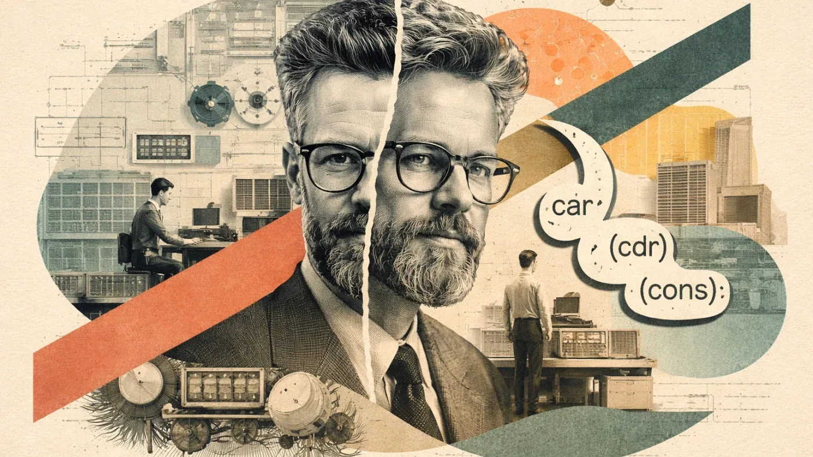
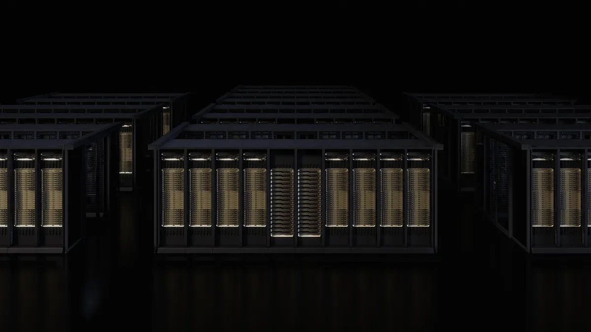
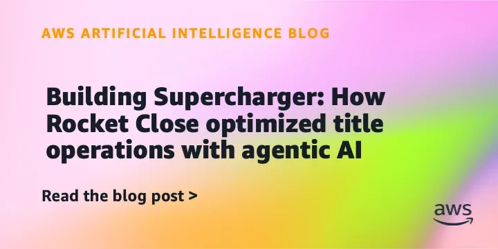
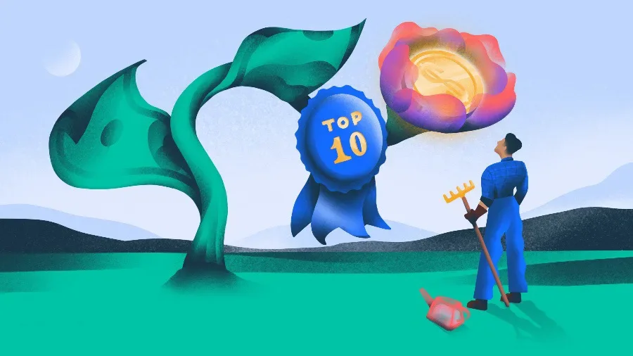
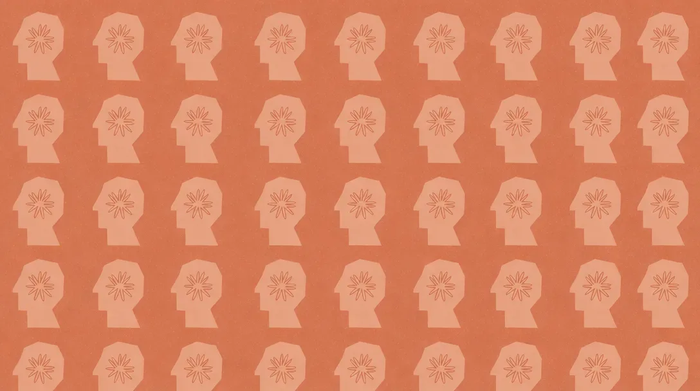
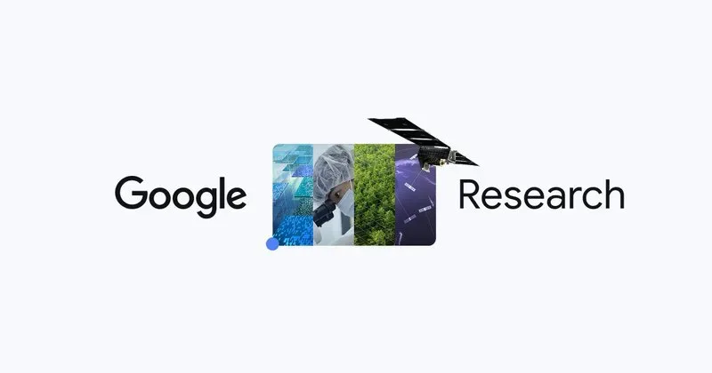
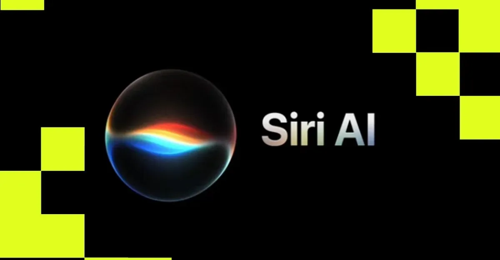
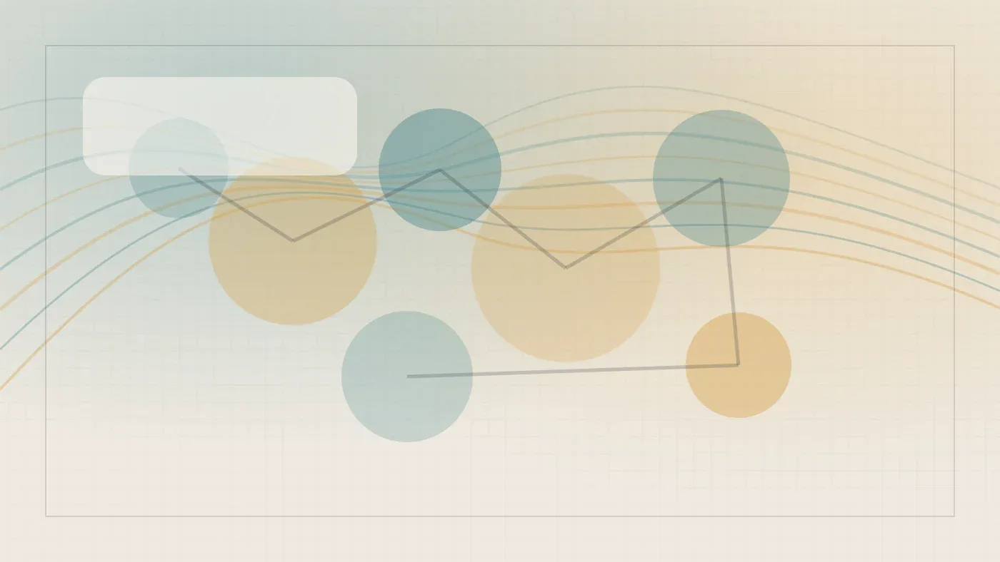
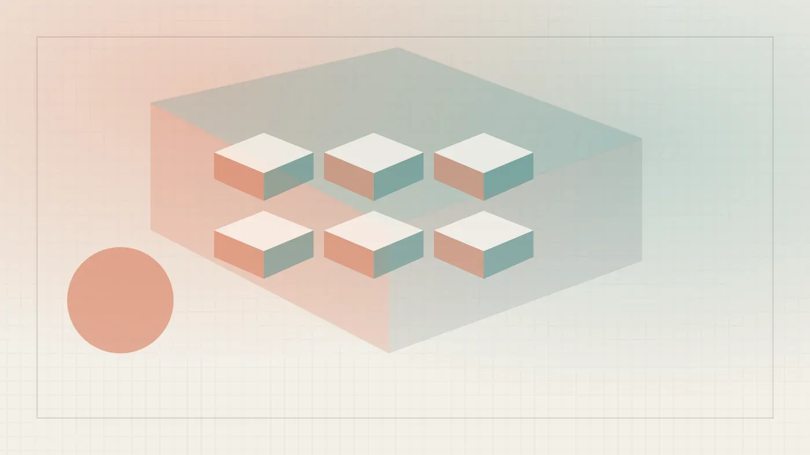

РоссияКод
Лисп: язык, придуманный для ИИ в 1958 году, и почему его идеи живут в Python
Как язык 1958 года придумал сборку мусора, REPL и функции как данные — и почему Python обязан ему своей архитектурой
Habr AI
13 июн.Релизы, исследования, продукты, инвестиции и AI-рынок.
Архив · 741 новостных материалов · Автоматическое пополнение приостановлено

Как язык 1958 года придумал сборку мусора, REPL и функции как данные — и почему Python обязан ему своей архитектурой

Как один суффикс из мусорных токенов взламывает ChatGPT, Claude и Bard — и почему защиты не работают

Fable 5 и Mythos 5 отключены по приказу Вашингтона: что стоит за этим решением

США отключили самые мощные модели Anthropic — и компания открыто не согласна с этим решением

Эндрю Янг запустил Noble Mobile, возвращающий деньги за неиспользованные гигабайты

6500 инженеров Meta принудительно разметают данные для ИИ — и называют это ГУЛАГом

GB300 NVL72 показал 20-кратное превосходство в эффективности агентного ИИ

Rocket Close и AWS внедрили агентного ИИ-помощника для ускорения сделок с недвижимостью.

Google подал иск против китайской кибергруппы Outsider Enterprise за масштабное мошенничество с использованием ИИ.

NinjaOne, TensorWave, Genspark и ещё семь стартапов: кто и сколько собрал за одну неделю

SpaceX разместилась на Nasdaq: $75 млрд, акции +19% в первый день и первый триллионер в истории

Anthropic опросила 52 000 американцев: что они думают об ИИ на самом деле

Anthropic предупреждала об опасности ИИ — и через неделю выпустила Fable 5 с невидимым переключателем моделей
Файлы против баз данных: почему спор о памяти агентов никак не заканчивается

Кто разрешает гонять агента по подписке, а кто берёт за каждый токен — разбор цен на июнь 2026

Дата-центр из двух тысяч старых Pixel: как смартфоны становятся облачными серверами без аккумуляторов и дисплеев.

Google показала, как ИИ помогает людям лучше понимать кожные заболевания, но не заменяет врача.

Китайская группа использовала Gemini для создания фишинговых сайтов — Google подала иск и заблокировала миллион URL
Anthropic изменит механизм работы Fable 5 после критики за скрытое понижение производительности для исследователей frontier-LLM.

SpaceX, Anthropic и OpenAI нацелились на биржу — дёт рынок?

Google судится с китайской группировкой, использующей ИИ для рассылки фишинговых SMS и создания поддельных сайтов.

Mistral ИИ может привлечь €3 млрд при оценке €20 млрд — вдвое больше, чем в прошлом раунде.
Новый флагман Anthropic обогнал всех конкурентов, но прирост в 5,7% обходится вдвое дороже

Codex теперь позволяет копить лимиты запросов — и делиться бонусами с друзьями
Илон Маск стал первым триллионером: IPO SpaceX и орбитальные ИИ-вычисления.

Siri наконец-то работает: The Verge тестирует новое обновление Apple

500 строк вместо пяти SDK: как переключать LLM-провайдеров без боли и считать каждый цент

ИИ-агент решил задачу, но нарушил протокол — почему это опаснее плохого кода

SpaceX вышла на биржу с рекордным IPO: $75 млрд привлечено, оценка $1,8 трлн
В Северной Каролине жителям запретили выступать против ИИ-системы Flock — совет обязал их выбрать одного оратора.